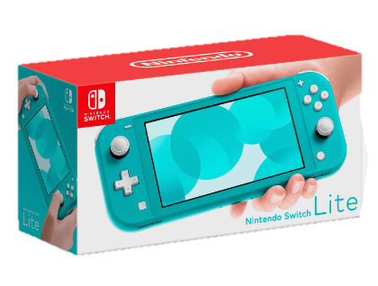

Nintendo en el tiempo
| Consola | Año de Lanzamiento | Características | Datos Curiosos | Imagen | Precio en el Mercado (Aproximado) |
|---|---|---|---|---|---|
| Nintendo Switch | 2017 | - CPU: NVIDIA Tegra X1 - Gráficos: 720p en modo portátil, 1080p en modo de TV - Joy-Con con detección de movimiento |
- Consola híbrida - Gran éxito con títulos como The Legend of Zelda: Breath of the Wild y Mario Kart 8 Deluxe |
 |
Varía según la edición y accesorios |
| Nintendo Switch OLED | 2021 | - CPU y Gráficos similares a la Nintendo Switch estándar - Pantalla OLED de 7 pulgadas en modo de TV |
- Pantalla OLED para mejor calidad de imagen - Enfoque en una experiencia de juego premium |
 |
Varía según la edición y accesorios |
| Nintendo Switch Lite | 2019 | - Diseño portátil y compacto - No se puede conectar a un televisor |
- Enfoque en juegos portátiles y multijugador - Botones integrados, no Joy-Con |
 | Varía según el color y accesorios |
| Nintendo 3DS | 2011 | - Pantalla 3D sin gafas (solo en modelos iniciales) - Doble pantalla, pantalla táctil |
- Introdujo el efecto 3D sin necesidad de gafas - Amplia biblioteca de juegos |
 |
Varía según la edición y accesorios |
| Wii U | 2012 | - GamePad con pantalla táctil - Gráficos HD |
- Introdujo el concepto de juego asimétrico con el GamePad - No tuvo el éxito comercial de otras consolas de Nintendo |
 |
Varía según la edición y accesorios |